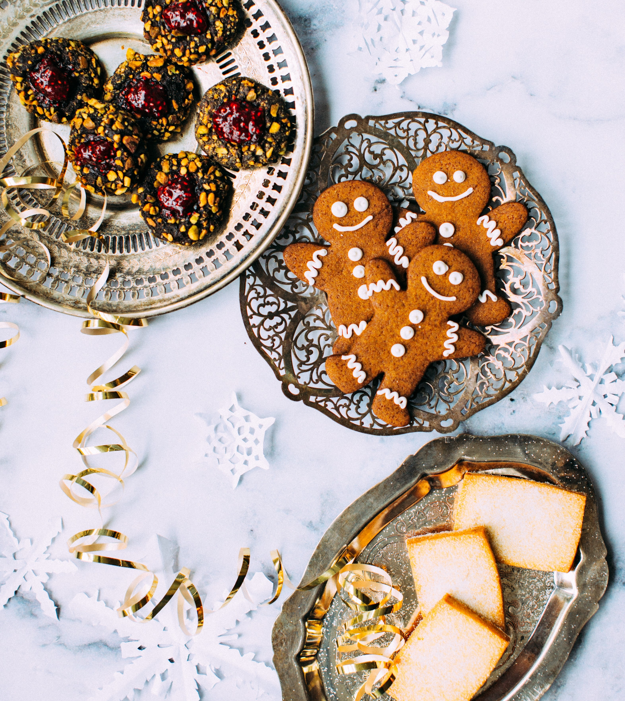

Cookie
쿠키(cookie)는 과자의 일종입니다.
쿠키는 만드는 방법에 따라 세 가지로 나뉘어 집니다.
드롭 쿠키(Drop Cookie)는 수분이 많아 짜서 만드는 쿠키고,
스냅 쿠키(Snap Cookie)는 수분이 적어 롤러기로 밀어 모양을 찍어 만드는 쿠키입니다.
아이스 박스 쿠키(Ice Box Cookie)는 생지를 모양대로 얼려서 잘라 굽는 쿠키를 말합니다.
쿠키를 만들 때 설탕만 넣는 것이 아니라 소금을 약간 넣어야
단맛과 조화를 이루어 맛있는 쿠키가 됩니다.
A cookie is a baked or cooked food that is typically small, flat and sweet.
In most English-speaking countries except for the United States and Canada, crisp cookies are called biscuits.
Chewier biscuits are sometimes called cookies even in the United Kingdom.
Some cookies may also be named by their shape, such as date squares or bars.
Cookies or biscuits may be mass-produced in factories, made in small bakeries or homemade.
Cookies are often served with beverages such as milk, coffee or tea.
クッキー（英: cookie）は、アメリカ食文化圏における、主に小麦を主原料とした小型の焼き菓子の総称である。
クッキーは北米で使われる言葉で、
小さなケーキを意味する中世オランダ語のkoekjeまたは（略式の）koekieから、北米にて英語に派生した。
それ以外の英語圏では一般的にビスケットと呼ばれる。
クッキーとビスケットは国・地域や言語によって、混同されていたり異なるものであったりと定義はまちまちである。
フランスの「プチフール」やドイツの「ゲベック」など、クッキーの同類は諸国に存在する。